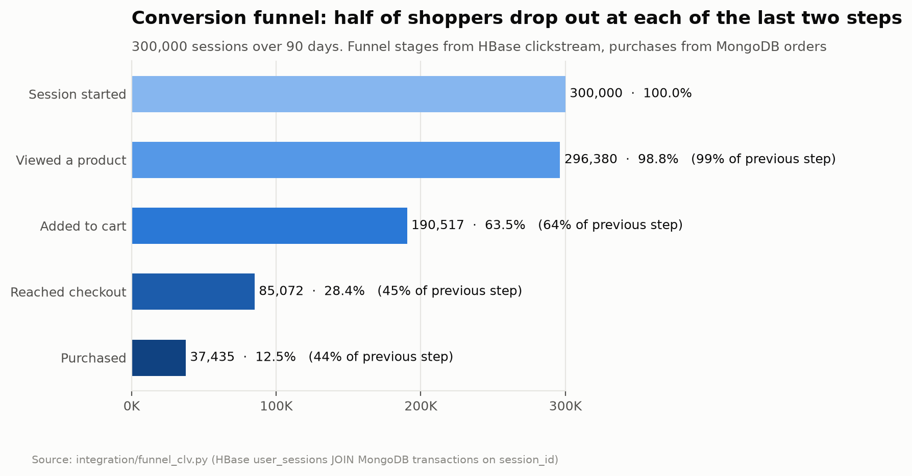
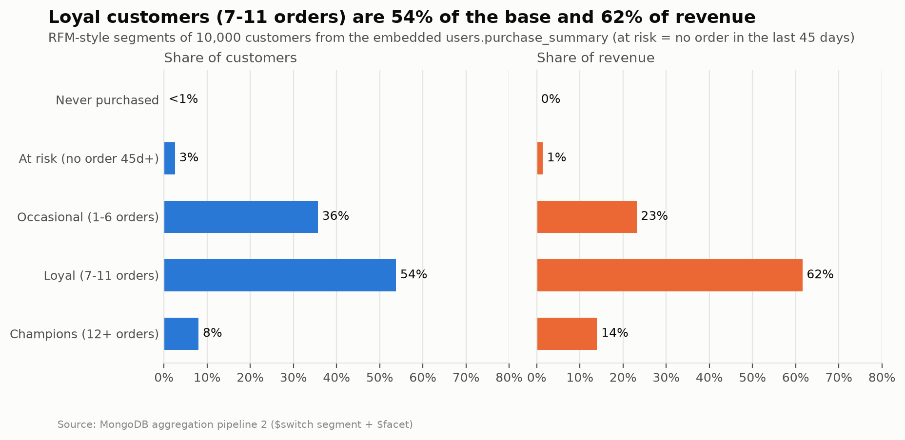
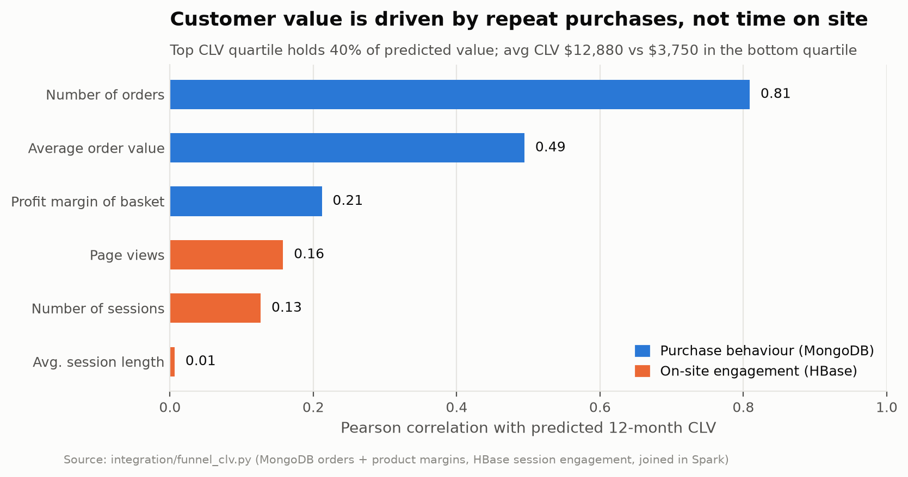
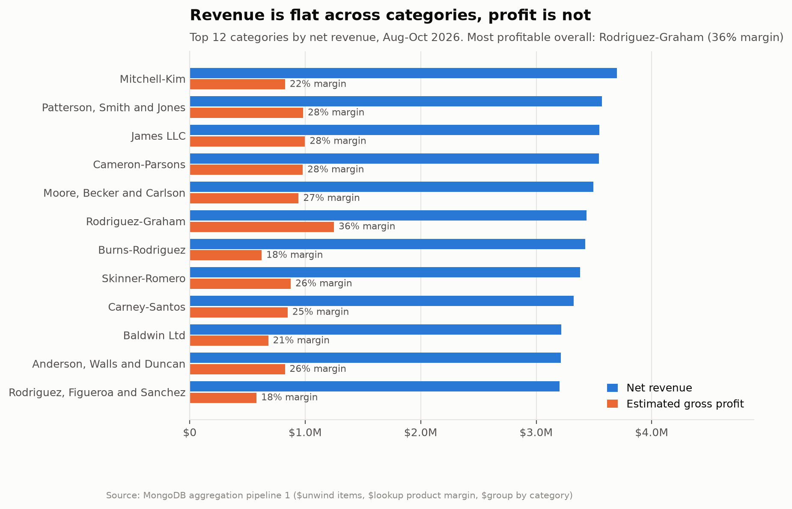
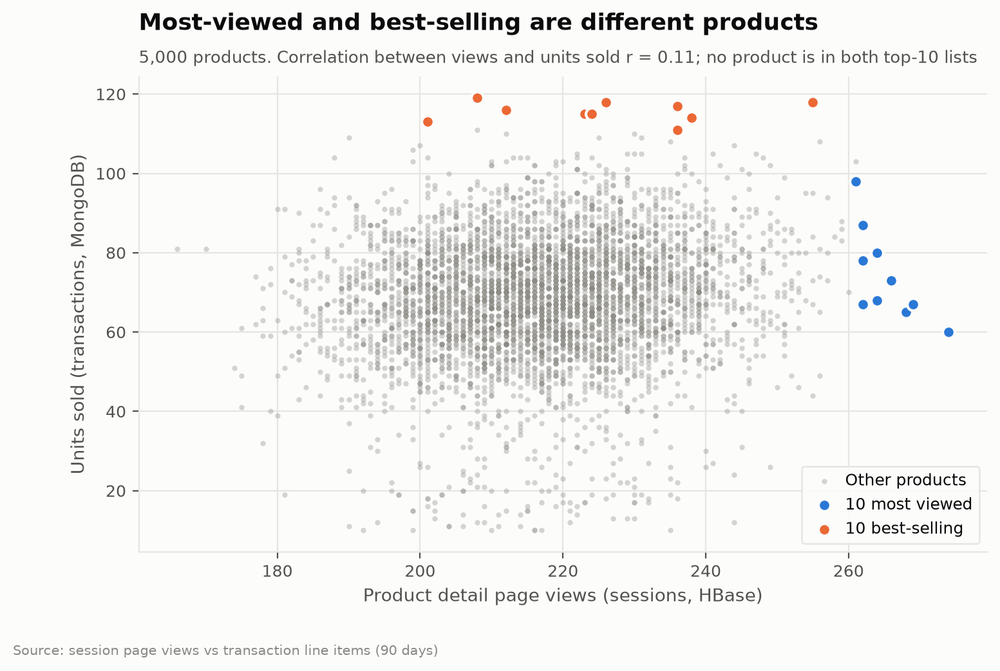
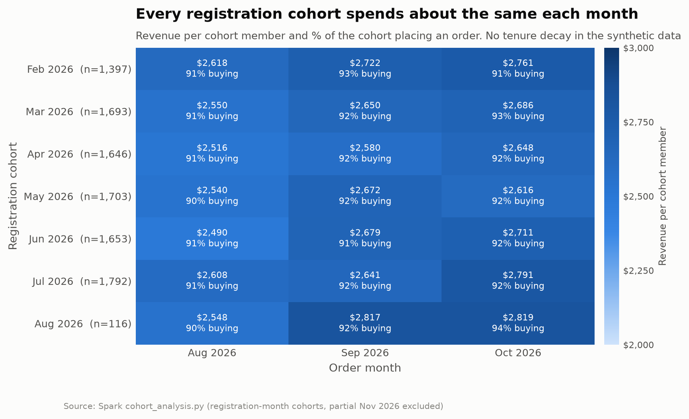

Summary. We generated a synthetic e-commerce dataset (10,000 users, 5,000 products, 300,000 browsing sessions with 3.0 M page views, 75,000 orders over 90 days) and built a polyglot analytics system around it. MongoDB stores the entity-centric documents (catalog, customer profiles with an embedded purchase summary, orders with embedded line items). HBase stores the high-volume clickstream under time-ordered row keys and daily product counters. Spark cleans the raw data, computes recommendation indicators and cohorts, runs Spark SQL across both "stores", and joins live HBase and MongoDB data for a conversion-funnel and customer-lifetime-value (CLV) analysis.
Key findings: only 12.5% of sessions convert, with about 55% of shoppers lost at each of the last two steps (cart to checkout, checkout to payment). The top CLV quartile holds 40% of predicted 12-month value. Customer value tracks repeat purchasing (r = 0.81) and is almost unrelated to time on site (r = 0.01). Several "flat" results (categories, devices, cohorts) are properties of the uniform random generator, and we report them as such rather than as business insights.
Each technology does the job its data model is best at. Raw JSON is produced once, loaded into the two operational stores, and analysed by Spark either directly from the files (batch jobs) or by extracting from the live stores (integrated queries).
docker compose up -d); Spark runs in local mode on 8 cores.The course generator was kept faithful in its data model and probabilities, with six changes so it works as a pipeline input: (1) scale presets (small / medium / full, where full is the original 2 M sessions); (2) streaming output instead of holding millions of sessions in RAM; (3) JSON Lines output, which Spark can split across tasks (one large JSON array cannot be split); (4) a fixed end date and seeded IDs so the dataset is reproducible; (5) the subcategory_id the brief expects on products; and (6) an inventory fix so an order is charged only if all its lines are in stock, and a session is marked "converted" only if an order was actually created. We used the medium preset: 300,000 sessions in 3 files, 75,000 transactions (37,435 linked to a session), generated in 129 s.
| Collection | Shape | Design decision and justification |
|---|---|---|
categories | {_id, name, subcategories:[{id, name, profit_margin}]} | Embed subcategories: 3-5 per category (bounded one-to-few), always read with the parent, never queried alone. |
products | {_id, name, category:{id,name}, subcategory:{id,name,profit_margin}, price_history:[…], stock, …} | Extended reference: category and subcategory names and margin are copied onto the product. The catalog is read far more often than categories change, so product pages and profit pipelines need no $lookup. price_history (1-3 entries) is embedded. |
users | {_id, geo:{…}, registration_date, purchase_summary:{order_count, total_spent, avg_order_value, first/last_purchase, favourite_categories[3]}} | Computed / subset pattern: the frequently needed aggregates are embedded and computed at load time. The unbounded list of orders stays in transactions, which avoids unbounded document growth (16 MB limit) and write amplification. |
transactions | {_id, session_id, user_id, timestamp: Date, items:[{product_id, category_id, qty, unit_price, subtotal}], subtotal, discount, total, …} | Embed line items: written and read with the order, so each order is an atomic single-document write. category_id is stamped on each item so revenue by category needs only $unwind + $group. |
Indexes back the query patterns: {user_id:1, timestamp:-1} (a customer's order history), {timestamp:1} (time-range revenue), multikey {"items.product_id":1} (orders containing product X), sparse {session_id:1} (session-to-order link for the funnel), plus catalog and segment indexes. Loading 90,025 documents and building the indexes took 6.8 s.
Aggregation pipelines (src/mongodb/aggregations.py; the brief asks for two, we implemented three):
net = line × total/subtotal), runs $unwind on items, then $lookup with a sub-pipeline to fetch the subcategory margin, and finally $group and $project. Output: 89 (category, month) rows.purchase_summary: a $switch assigns a segment (never purchased, at risk = no order in 45 days, occasional, loyal, champions), and $facet returns three views in a single pass (frequency $bucket, spend $bucket, segment totals).$lookup back to the catalog for name, category and remaining stock (an inventory-risk view).| Table | Row key | Column families and rationale |
|---|---|---|
user_sessions | user_id | (Long.MAX − start_ms) | session_id | All sessions of a user are contiguous (prefix scan) and the newest sorts first (reverse timestamp), so "last N sessions" is a scan with LIMIT N. The session-ID suffix guarantees uniqueness. Families: s session metadata (16 cells); pv page views, one cell per view with qualifier 000…015 (wide and sparse, 4-16 cells per row); c cart lines, qualifier = product_id (often empty). A listing reads only s and never touches the larger pv store files. |
product_metrics | product_id | yyyymmdd | One product's history is contiguous and date-ordered, so a date-range report is one bounded STARTROW/STOPROW scan. Family m: views, cart_adds, purchases, units_sold, revenue. |
Both tables use VERSIONS=1 (events are immutable), BLOOMFILTER=ROW and short family names (the family and qualifier are stored with every cell). They are pre-split on key ranges (user_002000 … user_008000, prod_01000 … prod_04000) so writes spread across five regions from the start instead of hot-spotting one. We loaded all 300,000 sessions (8.1 M cells in 128 s, about 2,300 rows/s through Thrift) and 399,779 product-day rows.
Access pattern (src/hbase/query_hbase.py) | HBase operation | Rows | Latency |
|---|---|---|---|
| Latest 5 sessions of a user | prefix scan user_000000|, LIMIT 5, family s | 5 | 25 ms |
| A user's sessions, 1 Sep to 31 Oct | bounded scan, reversed time bounds | 21 | 20 ms |
| Full journey of one session | single-row GET, families pv, c | 1 | <10 ms |
| Daily metrics of a product over 2 months | bounded scan prod_00628|20260901 … |20261031~ | 59 | 38 ms |
MongoDB holds data that is entity-centric, nested and queried in many ways: a product, a customer, an order. These need rich secondary indexes, ad-hoc filters and aggregation pipelines, and moderate write rates. HBase holds data that is append-only, high-volume, time-ordered and read by key range: the clickstream (10 page views per session) and per-day counters. HBase gives predictable millisecond reads for the patterns built into the row key, linear write scaling across regions, and cheap sparse columns. In exchange it offers no secondary indexes or ad-hoc queries (any other access pattern is a full scan, which is Spark's job). Sessions could live in MongoDB too, and the nested journey would suit a document, but at 2 M+ sessions per quarter the dominant queries are "this user's recent activity" and "this product per day", which are exactly what a sorted wide-column key serves best.
spark_common.py, clean_normalize.py)All jobs share one cleaning layer, so every analysis runs on the same typed tables. Raw files are read with explicit schemas. That avoids an extra inference pass over 600 MB and is essential for cart_contents: its JSON keys are product IDs, so inference would create one struct field per product (thousands of columns), whereas the declared type is MAP<STRING, STRUCT<quantity, price>>. The cleaning steps are: drop duplicate keys and orphan records; parse ISO strings to timestamps; normalise case and fill missing geo and referrer values; flatten geo_data and device_profile; explode arrays into transaction_items (162,838 rows) and page_views (2,996,073 rows); derive date, hour, weekday, net line revenue and reached_checkout; and enrich products with their category through broadcast joins. The data-quality report confirmed 0 duplicates, 0 unknown product or user references and 0 inconsistent totals, and exposed one generator flaw: 45,933 sessions (15%) reach checkout with an empty cart.
recommendations.py)Market-basket rules are generated per basket with a self-join on the basket ID, keeping x < y so each unordered pair is produced once (halving the shuffle), then mirrored into X→Y and Y→X. Single-item counts are broadcast to compute support, confidence = support / count(X) and lift = confidence / P(Y). The results matter mostly for what they say about the data. Of 52,447 multi-item orders, only 2 product pairs reach support ≥ 3: with 5,000 products there are 12.5 M possible pairs, so purchase co-occurrence is far too sparse (the lift of 175 on 3 orders is noise). The same method on sessions ("viewed together") yields 12,612 pairs, because sessions outnumber orders 4:1 and each views about 3 products. Clickstream data from HBase is therefore the better signal for recommendations and cold start. At category level every pair has support (330-500 orders), but lift is 0.64-0.85: with at most 3 products per order, one category's slot crowds out the others, and the uniform generator contains no genuine affinity.
cohort_analysis.py)Users are grouped by registration month (Feb to Aug 2026) and spending is tracked per order month; a second view groups users by first-purchase month to build a retention table, using a min() window over each user's orders. Every cohort has 90-94% of members buying each month and $2,490-2,819 revenue per member (Figure 7). Average 90-day spend is flat across cohorts ($7,746-8,185), and first-purchase retention is 92% after 1 and 2 months. In other words tenure has no effect, which again reflects how the generator samples users. A small "Nov 2026" bucket (sessions that started on 31 Oct and ended after midnight) is excluded as a partial month.
spark_sql_analytics.py)The cleaned DataFrames are registered as views: users, products and transactions stand for MongoDB, sessions and page_views for HBase. Six queries demonstrate CTEs, window functions and cross-store joins:
WITH engagement AS ( -- clickstream ("HBase")
SELECT user_id, COUNT(*) AS sessions, SUM(n_pages) AS page_views
FROM sessions GROUP BY user_id),
purchases AS ( -- orders ("MongoDB")
SELECT user_id, COUNT(*) AS orders, SUM(total) AS spent
FROM transactions GROUP BY user_id)
SELECT NTILE(4) OVER (ORDER BY e.page_views) AS engagement_quartile, ...
FROM users u JOIN engagement e USING (user_id) LEFT JOIN purchases p USING (user_id)
Q1 ranks the top 3 products per category (RANK()); Q2 computes conversion by device and referrer (12.3-12.9%, effectively flat); Q3 relates engagement to spend; Q4 profiles traffic by weekday and hour; Q5 compares products by price-change history; Q6 computes month-over-month growth per category (LAG()). In Q3 the most engaged quartile spends 19% more than the least engaged ($8,669 vs $7,267), but revenue per page view falls from $32 to $23: extra browsing has diminishing returns. In Q5, products whose price rose sold the same units (65 per product) but earned the most revenue ($17.3K vs $14.2K for price cuts), so demand in this data is price-inelastic.
BroadcastHashJoin instead of shuffling 300 K sessions.spark.sql.shuffle.partitions = 16 (the default of 200 is wasteful on 8 cores); Adaptive Query Execution enabled to coalesce small partitions and handle skew.x < y condition to halve pair generation.--parquet).Sources. HBase user_sessions provides the funnel stages: product viewed (from pv page types), cart (any c cell), checkout reached. MongoDB transactions provides purchases (linked by session_id), revenue and line items; MongoDB products provides profit margins; MongoDB users provides registration and country.
Workflow (src/integration/funnel_clv.py): (1) Extract: a happybase scan of 300,000 sessions (59-73 s, reading only the needed families and reducing page views to page types on the client) and pymongo projections of orders, products and users (1 s). (2) Transform in Spark: derive the five funnel stages per session; left-join sessions to orders on session_id (the cross-store join); aggregate per device and referrer; build per-user RFM features plus HBase engagement; compute margin-weighted CLV. (3) Load: CSV result tables for the charts. A consistency check found 0 session-linked orders without a matching HBase session.
CLV model (simple and explainable with 90 days of history): CLV₁₂ = (orders₉₀/3) × AOV × basket margin × expected lifetime, where expected lifetime = min(1/monthly churn, 12). Observed 30-day inactivity is 7.7%, floored to 8.3% (1/12) so the horizon caps at 12 months.
| CLV quartile | Avg CLV (12 m) | Share of value | Orders / 90 d | AOV | Margin | Sessions | Session→order |
|---|---|---|---|---|---|---|---|
| Q1 (lowest) | $3,750 | 11.6% | 4.7 | $867 | 24.4% | 29.1 | 16.5% |
| Q2 | $6,528 | 20.2% | 6.7 | $1,015 | 25.3% | 29.7 | 23.3% |
| Q3 | $8,920 | 27.6% | 8.2 | $1,116 | 25.6% | 30.4 | 27.6% |
| Q4 (highest) | $12,880 | 40.2% | 10.4 | $1,221 | 26.1% | 30.8 | 34.6% |
Why these technologies, and performance. Neither store can answer these questions alone: HBase has no joins and MongoDB does not hold the clickstream. Spark is the natural place for the join and the per-user feature engineering. The extraction is the bottleneck: a single-threaded Thrift scan accounts for about 75% of the job's 249 s. At scale, each executor should read its own HBase regions (TableInputFormat or an hbase-spark connector) and its own MongoDB partitions (MongoDB Spark Connector with predicate pushdown), and the funnel stages could be pre-computed into a session-summary column family at ingest time.






transactions on a hashed user_id (spreads writes, keeps a user's orders on one shard for the {user_id, timestamp} index), or a compound {user_id, timestamp} range key. purchase_summary should be maintained incrementally ($inc on order insert, or change streams) instead of being rebuilt at load time. Pipelines with $lookup scale worst across shards; the extended-reference copy of margins on products avoids them where possible.FAST_DIFF encoding for the repetitive keys.local[*] to YARN or Kubernetes. Pair generation is the quadratic step: at larger scale cap basket size, use FP-Growth (pyspark.ml.fpm), or ALS for collaborative filtering. Persist cleaned data as date-partitioned Parquet so later jobs prune partitions instead of re-parsing JSON.| Analytical task | Technology | Reason |
|---|---|---|
| Catalog, customer profile, order lookups; revenue and segment pipelines | MongoDB | Nested documents match the entities; secondary indexes; expressive aggregation framework. |
| A user's recent activity; session journey; product-per-day metrics | HBase | Sorted row keys turn these into short range scans with millisecond latency; sparse wide rows; linear write scaling. |
| Cleaning 3 M page views; basket pairs; cohorts; window-function SQL | Spark | Distributed full scans, shuffles and joins that neither store is built for. |
| Funnel and CLV across stores | Spark + both stores | Joins clickstream and orders, which live in different systems by design. |
winutils, so results are written via pandas (Parquet output works on Linux).product_metrics counters in near real time (the brief's simulated stream); ALS or FP-Growth recommendations evaluated with precision@k; an interactive dashboard over the result tables.Reproducibility. Every number and figure in this report is produced by the scripts in the repository; the README lists the exact command sequence (generate → load MongoDB/HBase → Spark jobs → integration → charts), with the environment setup (Docker Compose, Python requirements, Java 17).